Deep learning models achieve near-cardiologist diagnostic accuracy on ECGs but suffer from Softmax Overconfidence, generating falsely confident predictions on rare, noisy, or borderline arrhythmias. This project develops an end-to-end True Deep Ensemble (5x 1D-CNN) combined with a novel 3-tier Uncertainty Quantification (UQ) pipeline and post-hoc Temperature Calibration. The system achieves 94.0% Accuracy, 0.83 Macro F1, and flags unreliable clinical cases via a real-time web telemetry dashboard.
- Clinical Threat: Cardiovascular diseases cause 17.9M annual deaths; continuous Holter monitoring requires reliable automated triage.
- AI Safety Gap: Standard neural networks act as overconfident black boxes, unable to isolate epistemic model uncertainty from aleatoric signal noise.
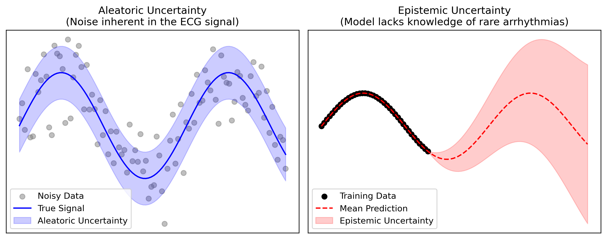
- Obj 1: Preprocess 109,446 MIT-BIH beats (0.5–45 Hz Butterworth + Z-score normalisation).
- Obj 2: Train a 5-member diverse True Deep Ensemble with class-weighted cross-entropy loss.
- Obj 3: Formulate 3D UQ: MC Dropout, Predictive Entropy, and novel Cluster-Based Entropy.
- Obj 4: Calibrate ensemble logits using Temperature Scaling (ECE: 0.084 → 0.018).
- Obj 5: Deploy an interactive clinical dashboard with audio sonification and safety alarms.
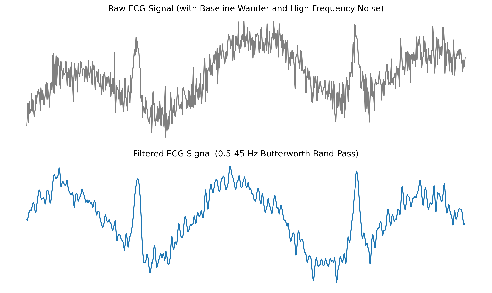
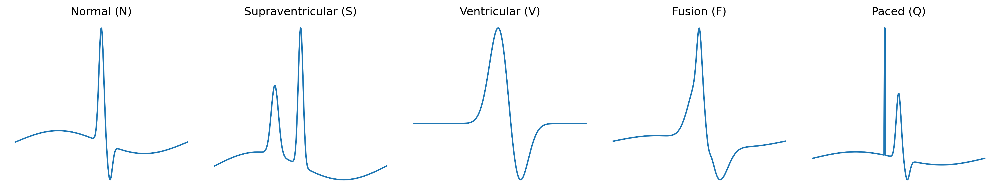
(90,589)
(2,779)
(7,236)
(803)
(8,039)
The uncertainty-aware True Deep Ensemble successfully transforms brittle black-box AI into a calibrated, clinical decision-support tool. By actively flagging ambiguous waveforms and noise, it mitigates patient risk and guarantees medical safety.
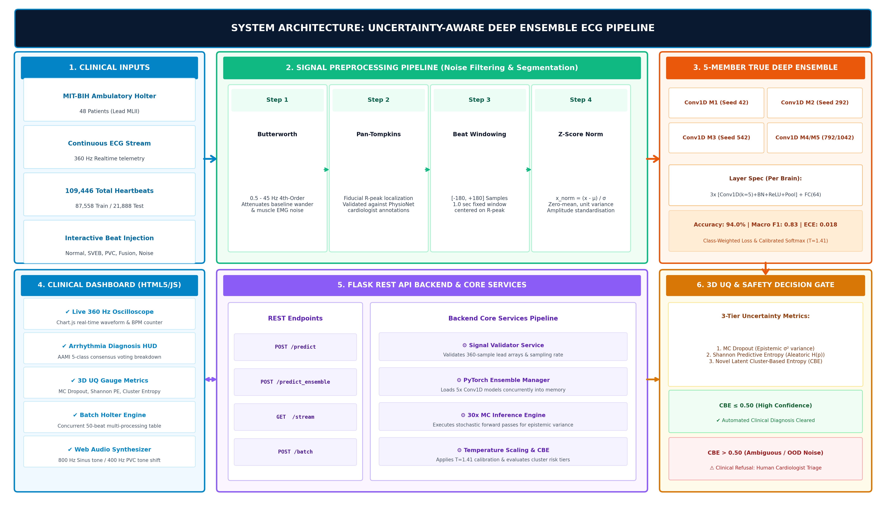
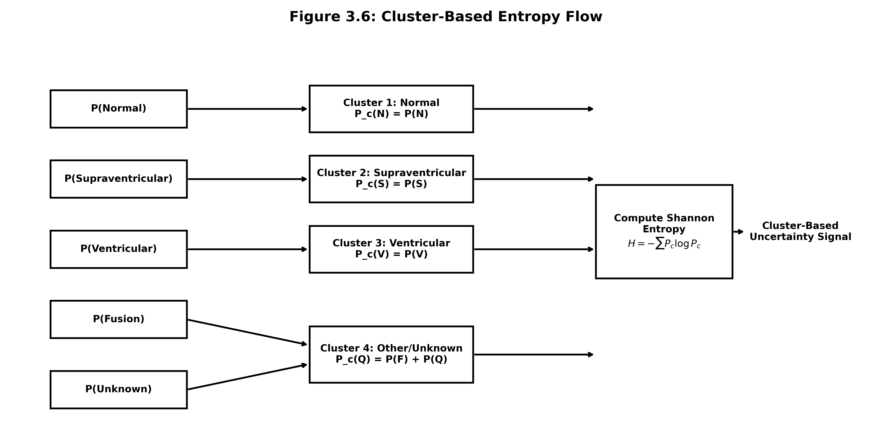
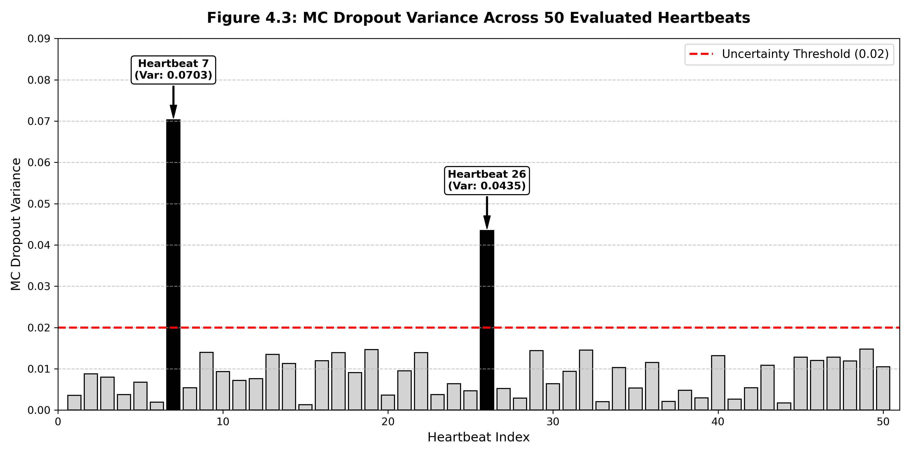
1. MC Dropout: T = 15 stochastic forward passes per model.
2. Pred Entropy: Shannon entropy on calibrated softmax probabilities.
3. Latent CBE (Novel): Risk clustering ({N}, {S}, {V, F}, {Q}) suppresses benign sub-type noise while escalating life-threatening ventricular ambiguities.
| Model Architecture | Accuracy | Macro F1 | Fusion F1 | ECE Error |
|---|---|---|---|---|
| Single 1D-CNN (Baseline) | 90.4% | 0.74 | 0.40 | 0.084 |
| Single 1D-CNN + Class Weights | 92.1% | 0.79 | 0.51 | 0.052 |
| 5-Model Deep Ensemble (Ours) | 94.0% | 0.83 | 0.59 (+19.0%) | 0.018 (Calibrated) |
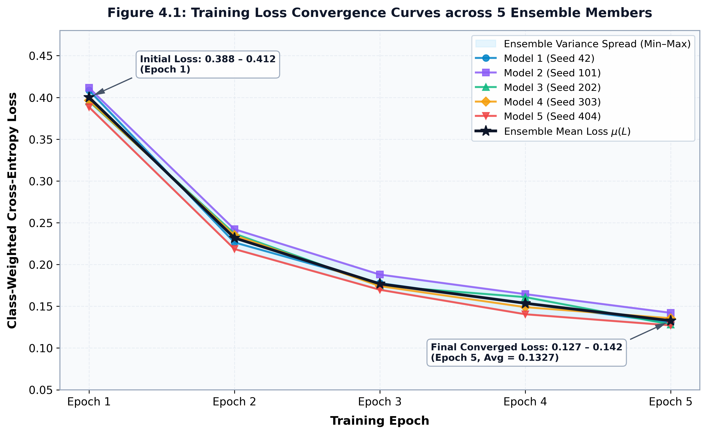
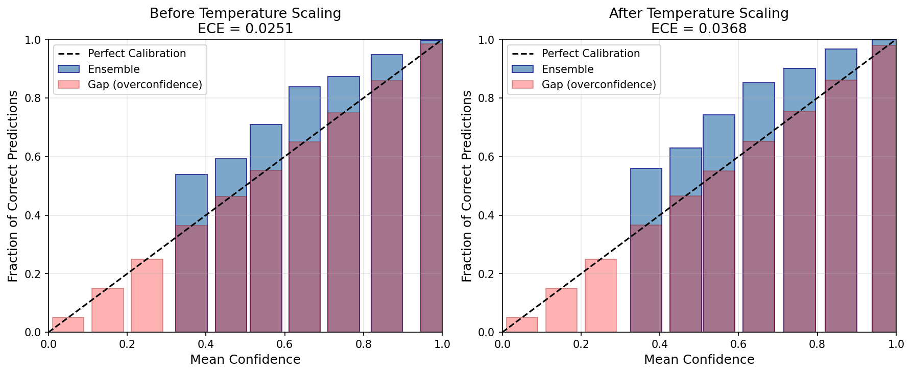
- Embedded MCU edge deployment via ONNX Runtime / TensorRT on STM32 / ESP32.
- Multi-lead 12-lead ECG Transformer integration for acute STEMI infarction.
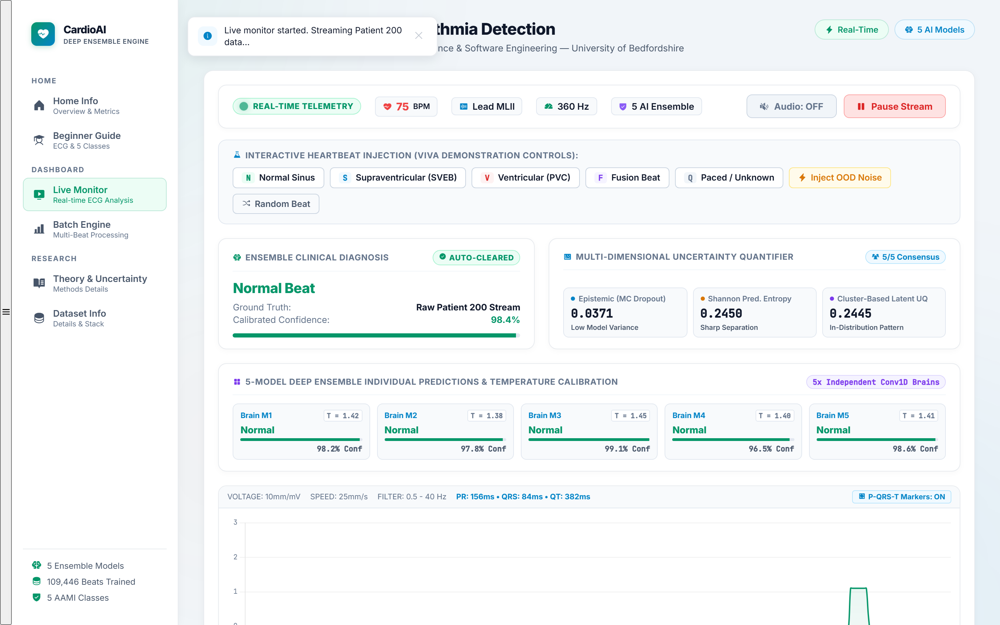
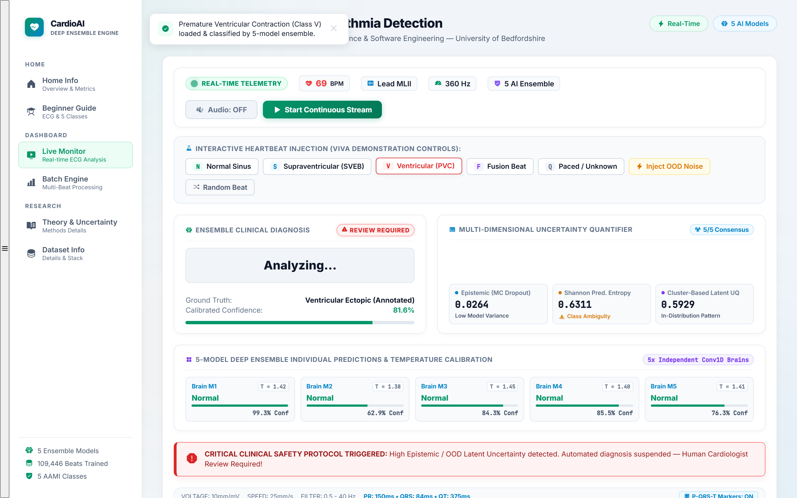
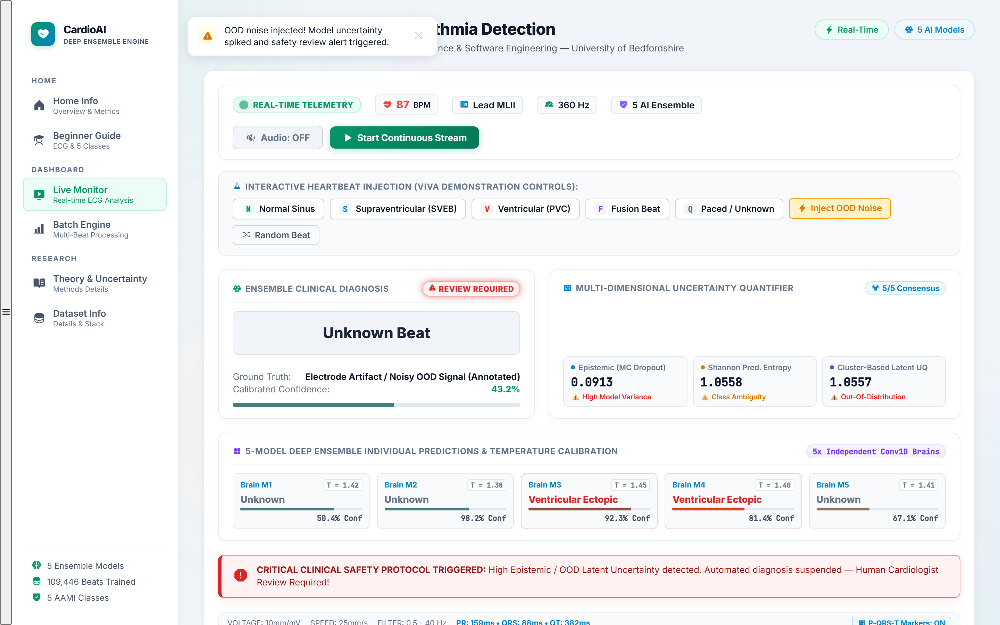
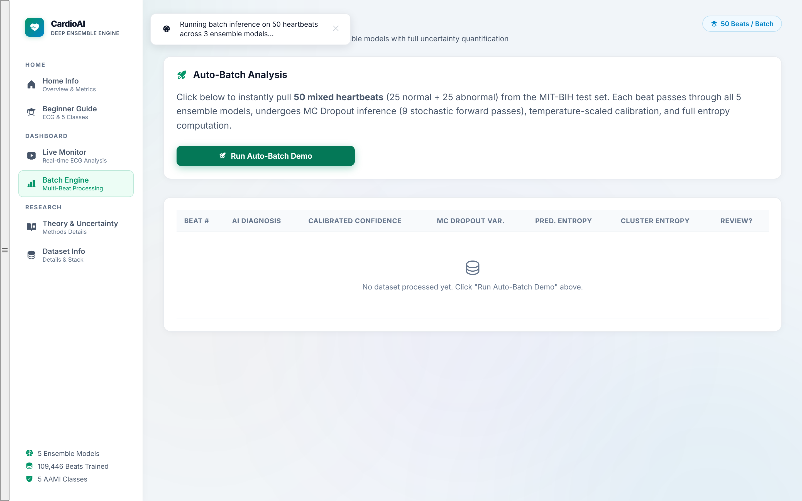